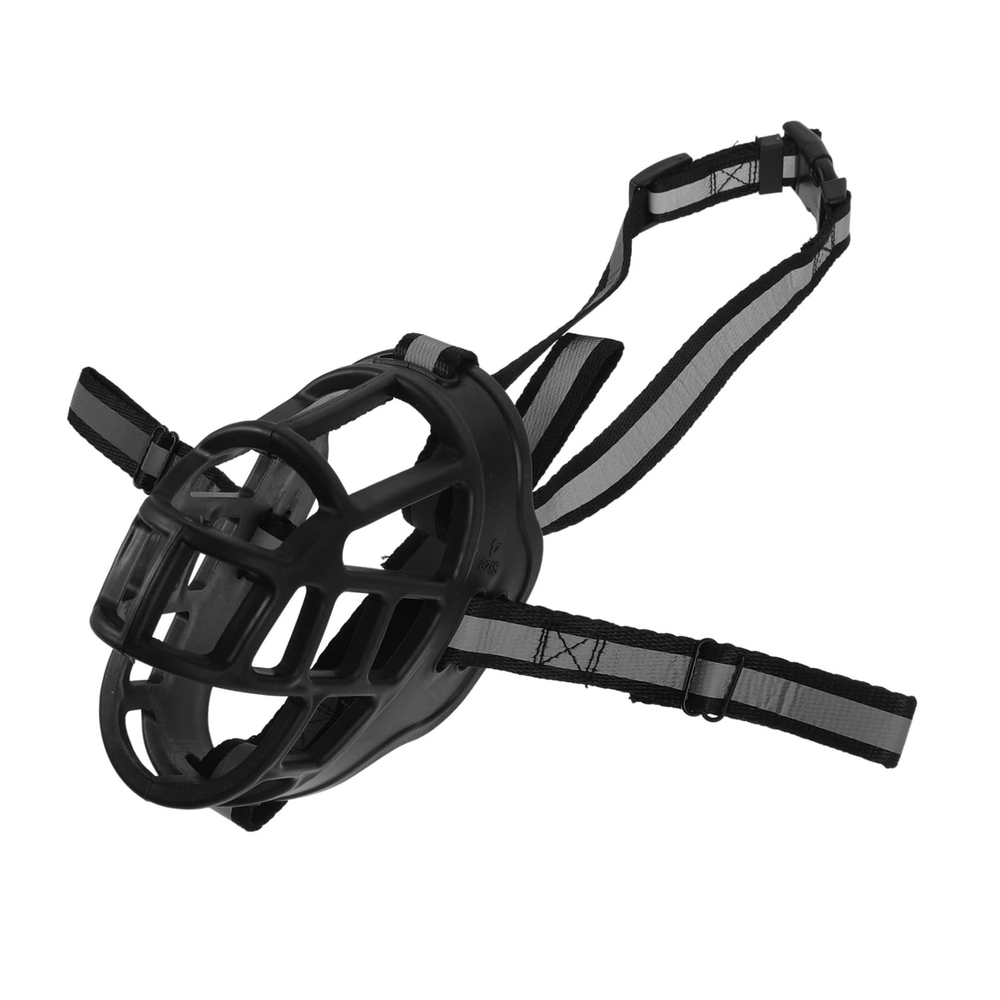
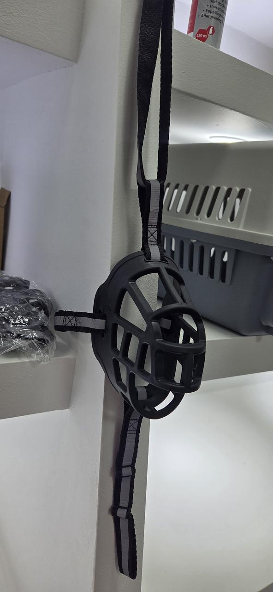

Acessórios para cãesAçaime para cães
Açaime para cães
com tiras ajustáveis
Modelo tipo cesto, com estrutura rígida e tiras ajustáveis. Consulte a Win Win Pet Shop para confirmar os tamanhos disponíveis e encontrar o ajuste adequado ao seu cão.
- Estrutura tipo cesto
- Tiras ajustáveis
- Fecho em fivela

Produto disponível na loja
Veja o ajuste antes de comprar.
O tamanho e o encaixe são importantes. Traga, se possível, as medidas aproximadas do focinho do seu cão ou fale com a nossa equipa para escolher um modelo adequado.
- Modelo com tiras de ajuste visíveis
- Estrutura frontal aberta tipo cesto
- Disponibilidade sujeita ao stock em loja
Detalhes visíveis
Características para uma escolha informada.
As características abaixo foram confirmadas directamente nas imagens do produto. Confirme sempre o tamanho e o fecho do modelo em stock.
O ajuste deve ser confortável.
Confirme que o açaime não aperta o focinho e que o cão consegue respirar naturalmente. Se tiver dúvidas sobre adaptação ou comportamento, procure orientação de um profissional qualificado.
Não substitui supervisão.
Um açaime deve ser usado de forma responsável e com supervisão. Não o utilize como substituto de treino, cuidados veterinários ou acompanhamento adequado.
Comprar na Win Win
Confirme o tamanho antes de visitar.
Indique o porte
Diga-nos o porte e as medidas aproximadas do focinho para orientar a sua procura.
Confirme o stock
A equipa confirma se temos o modelo e tamanho que procura disponíveis em loja.
Experimente na loja
Visite a Win Win Pet Shop em Maputo para verificar o encaixe antes da compra.